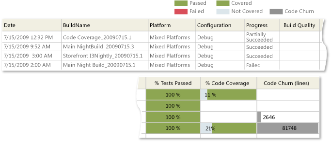
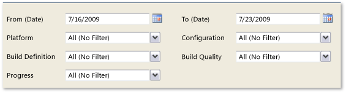

The Build Summary lists builds and provides information about test results, test coverage, code churn, and quality notes for each build.
For information about how to access, refresh, or manage reports, see Reports (GovDev).
|
|
|---|
|
This report requires that the team project collection that contains your team project was provisioned with SQL Server Reporting Services. This report is not available if Reports does not appear when you open Team Explorer and expand your team project node. |
|
In this topic |
You can use this report to answer the following questions :
|
Required Permissions
To view the report, you must be assigned or belong to a group that has been assigned the Browser role in Reporting Services. For more information, see Add Users to Team Projects or Managing Permissions.
 Data
in the Report
Data
in the Report
The data that appears in the Build Summary report is derived from the data warehouse. The report presents a visual display of the percentage of tests that are passing, code that is being tested, and changes in code across several builds.
You can review the results for both manual and automatic builds, in addition to the most recent builds and continuous or frequent builds. The report lists the most recent builds first and contains build results that were captured during the specified time interval for all builds that were run, subject to the filters that you specified for the report.
At a glance, you can determine the success or failure of several build definitions for the time period under review, as the following illustration shows.
The following table describes the information that appears for each quality indicator:
|
Quality indicator |
Description |
|---|---|
|
Build Progress |
Specifies the status of the build. A build can be in one of the following states:
|
|
Build Quality |
Specifies a manually assigned assessment of the quality of the build. You can add or remove the build qualities that are defined for your team project. For more information, see Add or Remove Build Quality Values. The column is empty if the build quality has not been rated. |
|
% Tests Passed |
Displays a horizontal stacked bar chart that lists the percentage of tests that passed superimposed on a green bar. The remaining bar segment is red, which indicates the percentage of tests that failed. The total length of the chart always equals the width of the column. |
|
% Code Coverage |
Displays a horizontal stacked bar chart that lists the percentage of code that was covered superimposed on a green bar. The remaining bar segment is light blue, which indicates the percentage of code that was not tested in the build. The total length of the chart always equals the width of the column. |
|
% Code Churn (lines) |
Displays a horizontal bar chart that lists the percentage of code churn superimposed on a gray bar. The code churn is calculated by determining the number of lines of code that the team has added, deleted, or modified divided by the total number of lines in the build. The bar length is proportionate to the percentage figure, scaled across the report so that the maximum amount of code churn across all builds equals the width of the column. |
You can filter the Build Summary report in the following ways:
-
Change the start and end dates for the report.
-
Filter the build definitions by specifying the platforms, configurations, build definitions, build qualities, or build progress to include in the report.
For more information, see Filtering the Reportlater in this topic.
Required Build Management Activities
For the Build Summary report to be useful, team members must perform the following activities to manage builds:
-
Configure a build system. To use Team Foundation Build, you must set up a build system.
For more information, see Configure Your Build System.
-
Create build definitions. You can create several build definitions, each of which can be run to produce code for a different platform. Also, you can run each build for a different configuration.
For more information, see Creating and Working with Build Definitions.
-
Define tests to run automatically as part of the build. As part of the build definition, you can define tests to run as part of the build or to fail if the tests fail.
For more information, see Define a Build Using the Default Template.
-
Configure tests to gather code coverage data. For code coverage data to appear in the report, team members must instrument tests to gather that data.
For more information, see How to: Configure Code Coverage Using Test Settings for Automated Tests and How to: Gather Code-Coverage Data with Generic Tests.
-
Run builds regularly. Builds can be run at set intervals or after every check-in. You can schedule regular builds when you use the schedule trigger.
For more information, see Create a Basic Build Definition and Running and Monitoring Builds.
-
(Optional) Rate completed builds. A team member can manually rate a build by using Build Explorer.
For more information, see Rate the Quality of a Completed Build.
Setting
the Duration of the Iteration
To understand the progress that the team is making in your current iteration, you must set the start and end dates for the report to match those of your current iteration cycle.
To change the duration of the iteration
-
Next to Iteration Start (Date) or Iteration End (Date), click the calendar icon, and then click a date.
-
Click View Report.
Interpreting
the Report
You can review the Build Summary report to answer questions about the most recent builds. It contains more information than the Build Success Over Time report.
Questions That the Report Answers
You can use this report to find answers to these questions:
-
What is the status of all builds over time?
-
Which builds succeeded?
-
Which builds have a significant number of changes to the code?
-
Which builds are ready to install?
-
How much of the code did the tests execute?
The Build Summary report does not indicate the causes of problems, but it points to where you can look to determine the root cause of problems. This report also does not indicate the size or significance of build problems.
Healthy Version of Report
A healthy Build Summary report show the following indicators:
-
Most builds are passing.
-
Most tests are passing.
-
Code coverage is high.
-
Code churn shows few spikes.
Unhealthy Version of Report
An unhealthy version of the Build Summary report will show one or more of the following indicators. You may want to investigate according to the following guidance:
-
Many builds are failing. Investigate reasons why builds are failing.
-
Many tests are failing. Investigate and fix tests that are failing to pass.
-
Code coverage is mostly blue. You might want to write more automatic tests.
-
Code churn shows spikes. You might want to verify that unusual peaks are accounted for.
Filtering
the Report
You can filter the Build Summary report in the following ways:
-
Change the start and end dates for the report.
-
Filter the set of builds that are represented in the report by specifying the platform, configuration, build definition, build quality, and build progress to include in the report.
 Note
Note
You can configure build definitions to run no tests, some tests, or all tests. The report will vary greatly based on the configuration of the build definitions.
The following illustration shows the available filters:
You must apply the filters in the sequence that the following procedure specifies. The options that are available with some filters depend on the filters that you previously set.
To filter the builds that appear in the report
-
In the Platform list, select the check box of each platform to include.
-
In the Configuration list, select the check box of each configuration to include.
-
In the Build Definition list, select the check box of each build definition to include.
-
In the Build Quality list, select the check box of each build quality to include.
-
In the Progress list, select the check box of each build progress to include.
-
Click View Report.